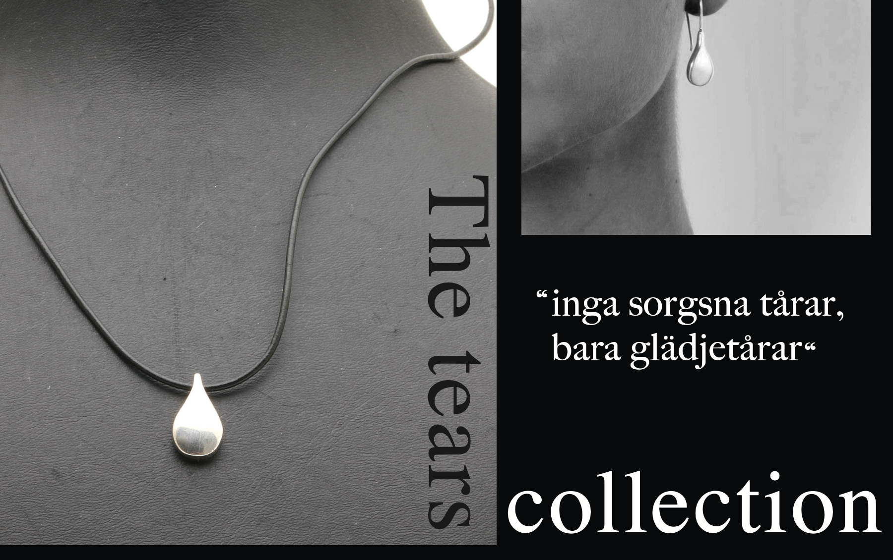
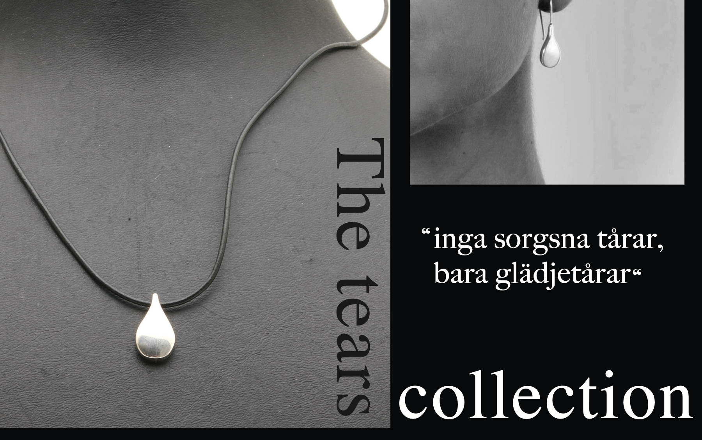

COFFE TABLE BOOK
This project was the first part of the final assignment in my first
grapic design course. I chose to do it about one of my favourite
jewlery designers; Efva Attling. For this project, I chose to add the
tears collection.Her description for the collection is: "No sad tears,
only happy tears"
Back to main